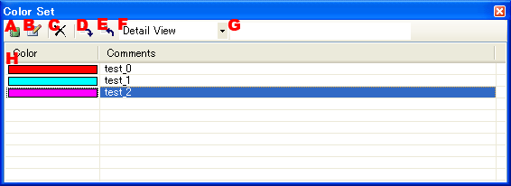
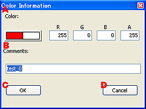

カラーセットウィンドウでは編集作業で使われる色を管理できます。
また、色情報リストをファイルにして、入出力することができます。
この色情報ファイルを共通利用することで、プロジェクト内で統一した色設定を行うことができます。
色パラメータを編集する各種設定ボタン類の間でドラッグ・ドロップによる設定操作が行えます。

色情報を新規作成します。情報入力のために、色情報入力ダイアログが表示されます。
色情報リストで選択された色情報を編集します。情報入力のために、色情報ダイアログが表示されます。
色情報リストで選択された色情報を削除します。
色情報リストをファイルに書き出します。
色情報リストをファイルから読み込みます。
色情報リストの表示方法を変更します。
色と、コメントを表形式で表示します。
色を小さなアイコンで表示します。アイコンにマウスをあわせるとコメントが表示されます。
色情報に記録されたコメントを表示、編集します。
色情報の一覧を表示します。
色情報を入力するためのダイアログです。
カラー設定とコメントを入力できます。
|  |
|